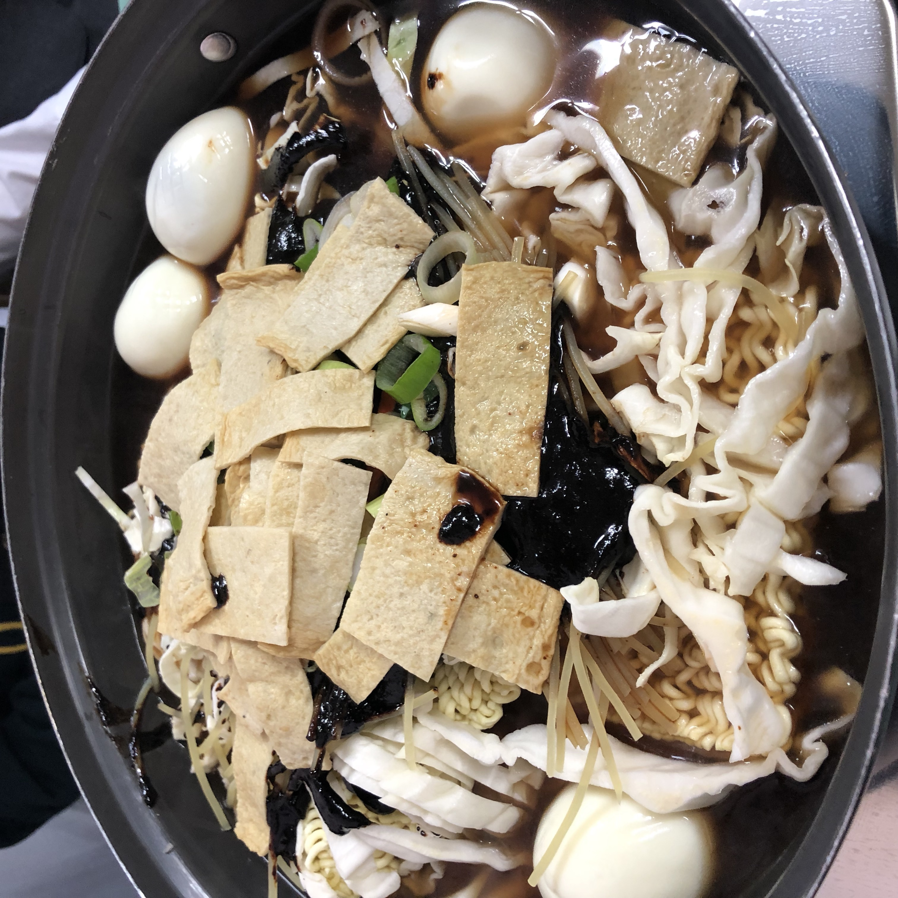

미림분식

미림분식은 미림여고/정보고 앞에 있는 분식집입니다.
이 식당은 많은 방송에 출연하여 유명합니다.
가장 유명한 메뉴는 쫄면이라고 합니다.
떡볶이는 짜장 떡볶이와 즉석 떡볶이가 있습니다.
마지막에 볶아먹는 볶음밥이 매우 맛있습니다.
반찬으로는 단무지가 있고 물은 셀프입니다.
미림 오기 전부터 기대했던 식당인데 생각보다 그냥 그렇습니다.
주소 : 서울 관악구 호암로 553
고시촌 미식회 별점:★★★
▲ 위 사진을 누르시면 미림분식의 자세한 정보를 보실 수 있습니다.